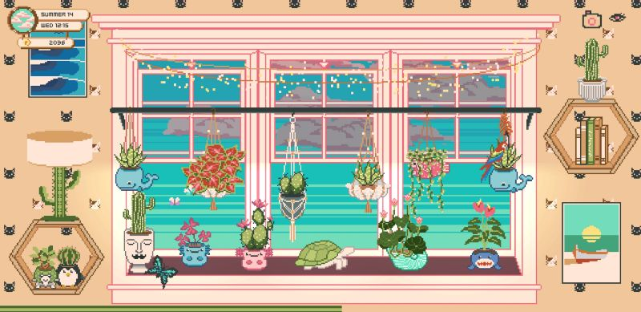
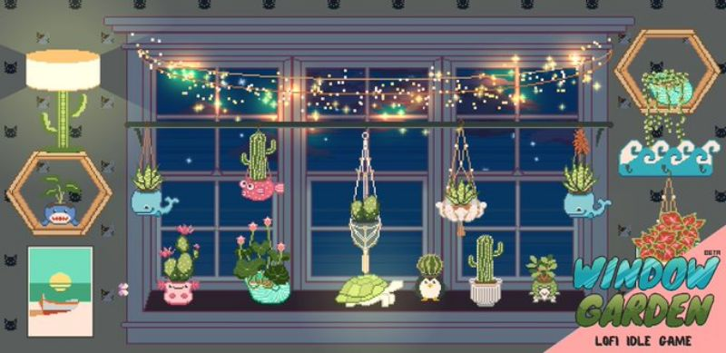

window garden
status: continuous
release date: ??
developer: clover-fi games
genre/type: idle game
links: google play, website
logs
19.dec.24 a very cute idle game about taking care of plants. it has some nice minigames and all that though i think i eventually got tired of it. it's still pretty neat and i do recommend it if you want to kill some time on your phone.
 